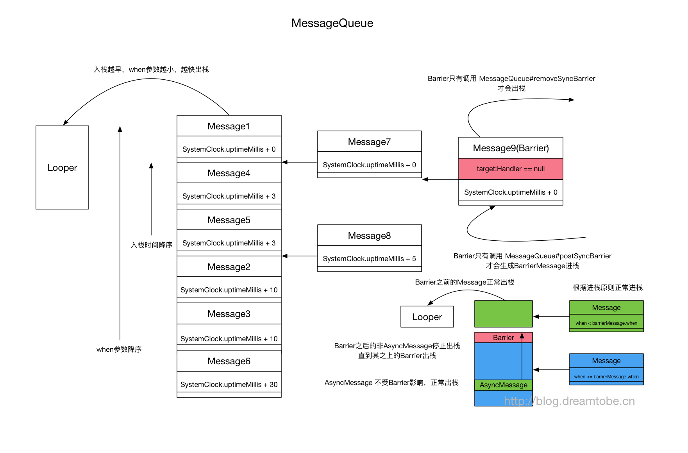

Handler总结
MessageQueue 中底层是采用的队列？
是单链表，不是队列，链表顺序按消息计划执行时间排列
Handler如何实现延迟处理消息
sendEmptyMessageDelayed(int what, long delayMillis) —>
sendMessageDelayed(Message msg, long delayMillis) —>
sendMessageAtTime(Message msg, long uptimeMillis) —>
enqueueMessage(MessageQueue queue, Message msg, long uptimeMillis) ->
MessageQueue#enqueueMessage(Message msg, long when)
boolean enqueueMessage(Message msg, long when) {
//...
synchronized (this) {
//...
msg.markInUse();
msg.when = when;
Message p = mMessages;
boolean needWake;
// 当消息队列中没有消息，或者是按时间来说是该排第一个
if (p == null || when == 0 || when < p.when) {
// New head, wake up the event queue if blocked.
msg.next = p;
mMessages = msg;
needWake = mBlocked; //如果当前在阻塞状态，需要wake，即立即停止阻塞
} else {
needWake = mBlocked && p.target == null && msg.isAsynchronous();
Message prev;
// 以时间为顺序，插入到链表队列中间
for (;;) {
prev = p;
p = p.next;
if (p == null || when < p.when) {
break;
}
if (needWake && p.isAsynchronous()) {
needWake = false;
}
}
msg.next = p; // invariant: p == prev.next
prev.next = msg;
}
// We can assume mPtr != 0 because mQuitting is false.
if (needWake) {
nativeWake(mPtr); //唤醒线程阻塞状态
}
}
return true;
}
从以上代码可以看出该类的作用是把消息按时间顺序排序，并且控制线程的唤醒。
再看看next()
Message next() {
//...
int pendingIdleHandlerCount = -1;
int nextPollTimeoutMillis = 0; // 阻塞的时间
for (;;) {
if (nextPollTimeoutMillis != 0) {
Binder.flushPendingCommands();
}
// 阻塞操作
nativePollOnce(ptr, nextPollTimeoutMillis);
synchronized (this) {
// 获取系统启动后，到现在的时间
final long now = SystemClock.uptimeMillis();
Message prevMsg = null;
Message msg = mMessages;
if (msg != null && msg.target == null) {//当遇到同步屏障以后
// 查找下一条异步消息
do {
prevMsg = msg;
msg = msg.next;
} while (msg != null && !msg.isAsynchronous());
}
if (msg != null) {
if (now < msg.when) {
// 如果时间未到，设置下一轮需要阻塞等待的时间
nextPollTimeoutMillis = (int) Math.min(msg.when - now, Integer.MAX_VALUE);
} else {
// 得到消息
mBlocked = false;
if (prevMsg != null) {
prevMsg.next = msg.next;
} else {
mMessages = msg.next;
}
msg.next = null;
msg.markInUse();
return msg;
}
} else {
// 没有消息
nextPollTimeoutMillis = -1;
}
//...
}
}
Handler获取时间的方式是调用SystemClock.uptimeMillis()，并用它和消息的里包含的时间进行对比。
综上所述： 1. 如果sendEmptyMessageDelayed发送了消息A，延时为500ms，这时消息进入队列，触发了nativePollOnce，Looper阻塞，等待下一个消息，或者是Delayed时间结束，自动唤醒； 2. 在1的前提下，紧接着又sendEmptyMessage了消息B，消息进入队列，但这时A的阻塞时间还没有到，于是把B插入到A的前面，然后调用nativeWake()方法唤醒线程 3. 唤醒之后，会重新取队列，这是B在A前面，又不需要等待，于是直接返回给Looper 4. Looper处理完该消息后，会再次调用next()方法，如果发现now大于msg.when则返回A消息，否则计算下一次该等待的时间
注意：SystemClock.uptimeMillis()，Handler是通过它来获取时间的，但uptimeMillis()是不包括休眠的时间的，所以手机如果在休眠状态下，那时间就一直不变，所以使用Handler并不能准确的延迟执行，因为它不计算休眠时间。
Handler同步屏障
Handler中的Message可以分为两类：同步消息、异步消息。消息类型可以通过以下函数得知
//Message.java
public boolean isAsynchronous() {
return (flags & FLAG_ASYNCHRONOUS) != 0;
}
一般情况下这两种消息的处理方式没什么区别，只有在设置了同步屏障时才会出现差异。
通常我们使用Handler发消息时，这些消息都是同步消息，如果我们想发送异步消息，那么在创建Handler时使用以下构造函数中的其中一种(async传true)
public Handler(boolean async);
public Handler(Callback callback, boolean async);
public Handler(Looper looper, Callback callback, boolean async);
//Message.java
public void setAsynchronous(boolean async);
然后通过该Handler发送的所有消息都会变成异步消息。
同步屏障可以通过MessageQueue.postSyncBarrier函数来设置。
@hide
public int postSyncBarrier() {
return postSyncBarrier(SystemClock.uptimeMillis());
}
private int postSyncBarrier(long when) {
// Enqueue a new sync barrier token.
// We don't need to wake the queue because the purpose of a barrier is to stall it.
synchronized (this) {
final int token = mNextBarrierToken++;
final Message msg = Message.obtain();
msg.markInUse();
msg.when = when;
msg.arg1 = token;
Message prev = null;
Message p = mMessages;
if (when != 0) {
while (p != null && p.when <= when) {
prev = p;
p = p.next;
}
}
if (prev != null) { // invariant: p == prev.next
msg.next = p;
prev.next = msg;
} else {
msg.next = p;
mMessages = msg;
}
return token;
}
}
可以看到同步屏障也是一个消息，该函数仅仅是创建了一个Message对象并加入到了消息链表中。乍一看好像没什么特别的，但是这里面有一个很大的不同点是该Message没有target，这是同步屏障的重要特征，所以从代码层面上来讲，同步屏障就是一个Message，一个target字段为空的Message。
同步屏障只在Looper死循环获取待处理消息时才会起作用，也就是说同步屏障在MessageQueue.next函数中发挥着作用。
Message next() {
//...
int pendingIdleHandlerCount = -1; // -1 only during first iteration
int nextPollTimeoutMillis = 0;
for (;;) {
//...
synchronized (this) {
// Try to retrieve the next message. Return if found.
final long now = SystemClock.uptimeMillis();
Message prevMsg = null;
Message msg = mMessages;
if (msg != null && msg.target == null) {//碰到同步屏障
// Stalled by a barrier. Find the next asynchronous message in the queue.
// do while循环遍历消息链表
// 跳出循环时，msg指向离表头最近的一个异步消息
do {
prevMsg = msg;
msg = msg.next;
} while (msg != null && !msg.isAsynchronous());
}
/...
}
}
}
可以看到，当设置了同步屏障之后，next函数将会忽略所有的同步消息，优先返回异步消息。换句话说就是，设置了同步屏障之后，Handler只会处理异步消息。再换句话说，同步屏障为Handler消息机制增加了一种简单的优先级机制，异步消息的优先级要高于同步消息。
设置同步屏障消息后，如不清楚，它将一直呆在消息队列中起作用。清除同步屏障可以通过MessageQueue.removeSyncBarrier函数来设置。
public void removeSyncBarrier(int token);
Android应用框架中为了更快的响应UI刷新事件在ViewRootImpl.scheduleTraversals中使用了同步屏障。为了让mTraversalRunnable尽快被执行，在发消息之前调用MessageQueue.postSyncBarrier设置了同步屏障。
void scheduleTraversals() {
if (!mTraversalScheduled) {
mTraversalScheduled = true;
//设置同步障碍，确保mTraversalRunnable优先被执行
mTraversalBarrier = mHandler.getLooper().getQueue().postSyncBarrier();
//内部通过Handler发送了一个异步消息
mChoreographer.postCallback(
Choreographer.CALLBACK_TRAVERSAL, mTraversalRunnable, null);
if (!mUnbufferedInputDispatch) {
scheduleConsumeBatchedInput();
}
notifyRendererOfFramePending();
pokeDrawLockIfNeeded();
}
}
void doTraversal() {
if (mTraversalScheduled) {
mTraversalScheduled = false;
mHandler.getLooper().getQueue().removeSyncBarrier(mTraversalBarrier);//清除同步屏障
performTraversals();
}
}

- MessageQueue 从栈底到栈顶按Message.when降序排列(相同Message.when的先进栈的离栈顶更近)的后进先出的栈(MessageQueue#enqueueMessage MessageQueue#next)
- barrier的Message与普通Message的差别是target(类型是Handler)为null，只能通过MessageQueue#postSyncBarrier创建 barrier Message
- barrier的Message与普通Message以同样的规则进栈，但是却只能通过 MessageQueue#removeSyncBarrier出栈
- 每个barrier使用独立的token(记录在Message#arg1)进行区分
- 所有的异步消息如果在barrier之后，都会被延后执行，直到调用MessageQueue#removeSyncBarrier通过其token将该barrier清除。
- 当barrier在栈顶时，栈中的异步消息照常出栈不受影响
注意：Handler中的对应构造函数被隐藏，但是可以通过调用Message#setAsynchronous指定对应的Message为asynchronous的Message。
值得一提的是，部署barrier(MessageQueue#postSyncBarrier)与清除barrier(MessageQueue#removeSyncBarrier)的相关方法都是目前还是非公开API。
Handler的内存泄漏原因
- 非静态Handler
private Handler mHandler = new Handler() {
@Override
public void handleMessage(Message msg) {
//匿名内部类隐式持有外部类的this，即activity
}
};
当通过Handler发送消息时，消息的target字段将引用Handler实例对象，进入消息队列，这就相当于消息间接引用了activity，如果不能在acitivity销毁前处理完，将导致内存泄漏。
private boolean enqueueMessage(MessageQueue queue, Message msg, long uptimeMillis) {
msg.target = this;//taget=handler
if (mAsynchronous) {
msg.setAsynchronous(true);
}
return queue.enqueueMessage(msg, uptimeMillis);
}
- 匿名内部类runnable。
mHandler.postDelayed(new Runnable() {
@Override
public void run() {
//匿名内部类隐式持有外部类的this，即activity
}
},1000);
消息的callback字段将引用Runnable，而Runnable引用外部activity，也可能导致内存泄漏。
private static Message getPostMessage(Runnable r) {
Message m = Message.obtain();
m.callback = r;
return m;
}
解决办法：
1. 静态Handler，匿名内部类将无法引用外部activity，通过在Handler的构造方法中加入activity弱引用，以实现对activity的访问。
2. activity销毁时，移除Handler所发送的所有未处理消息。mHandler.removeCallbacksAndMessages(null);
Looper如何退出
Looper 的退出方法是调用 quit() 或 quitSafely()，有什么区别?
quit() 和 quitSafely() 的本质就是让 MessageQueue 的 next() 返回 null，以此来退出Looper的for循环。
//Looper
public void quit() {
mQueue.quit(false);
}
public void quitSafely() {
mQueue.quit(true);
}
void quit(boolean safe) {
//特殊逻辑，主线程不允许退出
if (!mQuitAllowed) throw new IllegalStateException("Main thread not allowed to quit.");
synchronized (this) {
if (mQuitting) return;
mQuitting = true;
if (safe) removeAllFutureMessagesLocked(); // 把所有延迟的消息清空
else removeAllMessagesLocked(); // 直接把消息队列里面的所有消息清空
nativeWake(mPtr);//唤醒阻塞，Looper将退出。
}
}
//MessageQueue#next()
// Process the quit message now that all pending messages have been handled.
if (mQuitting) {
dispose();
eturn null;
}
//Looper#loop()
for (;;) {
Message msg = queue.next(); // might block
if (msg == null) {
// No message indicates that the message queue is quitting.
return;
}
//...
quitSafely() 会清空 MessageQueue 中的所有延迟消息(即所有 when > SystemClock.uptimeMillis() 的消息)，未处理的消息都等待处理后再终止Looper，所有禁止新的消息再放进MessageQueue。而quit() 则直接清除所有未处理消息，Looper立即退出。
Looper阻塞是否占用CPU性能
Message的入列和出列其实是一个很典型的生产者-消费者模型,其中使用了epoll管道机制，当没有消息的时候会进行阻塞，Linux底层会释放CPU时间片避免死循环造成性能的浪费。虽然是不断循环取出头结点的Message进行分发处理，但是如果没有消息时它是阻塞在 nativePollOnce 这个native方法中的，当我们enqueue插入Message时会触发 nativeWake 这个方法去唤醒，从而 nativePollOnce 阻塞解除，继续遍历MessageQueue取出头结点去处理。
int pendingIdleHandlerCount = -1; // for循环迭代的首次为-1
//阻塞操作，当等待nextPollTimeoutMillis时长，或者消息队列被唤醒，都会返回
//nextPollTimeoutMillis 为-1，一直阻塞，在调用nativeWake（enqueue Message或Looper.quit()退出Looper）时会被唤醒解除阻塞
//nextPollTimeoutMillis 为0，不阻塞
//nextPollTimeoutMillis 为>0，阻塞到对应时间后解除，如为10_000则阻塞十秒后解除，用于处理延迟消息
nativePollOnce(ptr, nextPollTimeoutMillis);
一个Looper对应一个MessageQueue吗？
Looper.loop()在一个线程中调用next()不断的取出消息，另外一个线程则通过enqueueMessage向队列中插入消息，所以在这两个方法中使用了synchronized 同步块，其中this为MessageQueue对象，不管在哪个线程，这个对象都是同一个，因为Handler中的mQueue指向的是Looper中的mQueue(mQueue是Looper创建的)，这样防止了多个线程对同一个队列的同时操作。
一个线程只有一个Looper吗？
要创建Looper，需要调用 Looper.prepare 和 Looper.loop。
private static void prepare(boolean quitAllowed) {
//看当前线程是否已通过TL绑定对应的实例, 有的话抛异常, 所以prepare方法只允许调用一次
if (sThreadLocal.get() != null) {
throw new RuntimeException("Only one Looper may be created per thread");
}
//创建Looper对象，并通过TL建立与线程的绑定关系
sThreadLocal.set(new Looper(quitAllowed));
}
可知Looper.prepare()在每个线程只允许执行一次，该方法给当前线程通过TL绑定一个线程所属的唯一一个实例。
IdleHandler 是什么
IdleHandler接口表示当MessageQueue发现当前没有更多消息可以处理的时候, 则顺便干点别的事情的callback函数(即如果发现idle了，那就找点别的事干)。callback函数有个boolean的返回值, 表示是否keep. 如果返回false, 则它会在调用完毕之后从mIdleHandlers中移除。
IdleHandler 可以用来提升提升性能，主要用在我们希望能够在当前线程消息队列空闲时做些事情（譬如UI线程在显示完成后，如果线程空闲我们就可以提前准备其他内容）的情况下，不过最好不要做耗时操作，否则影响Looper循环性能。